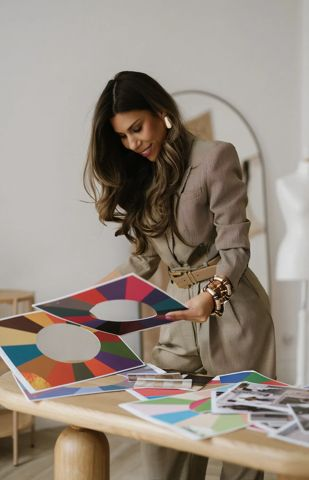
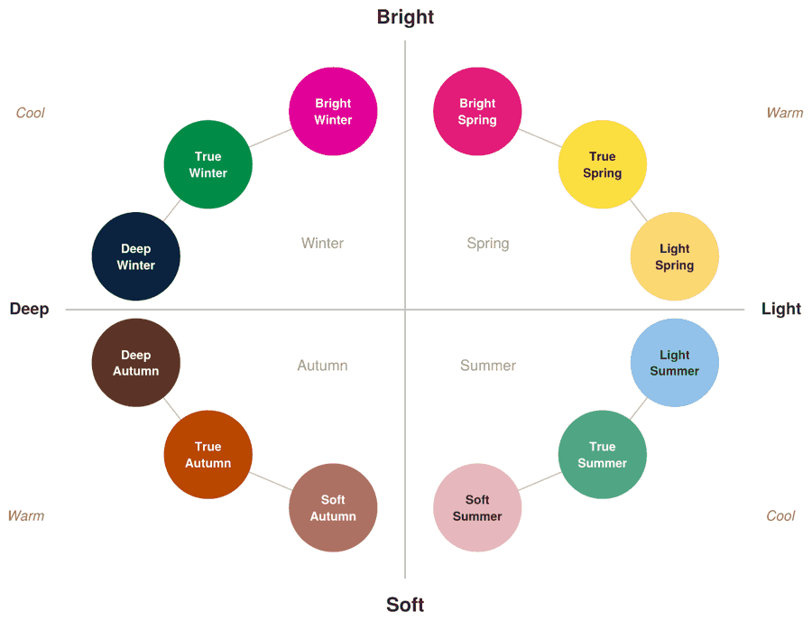

Welcome.
Congratulations. You're about to make your life a whole lot easier by understanding the colors that suit your features perfectly.
Meet Olivia

Hi, I'm Olivia. I'm a certified personal stylist and professional colour analyst, trained with the Australian Style Institute. Over the years I've helped people around the world discover the colours that truly suit them — in London, in Australia, and virtually everywhere in between.
I noticed a pattern with my clients. They would try to figure out their own season using online quizzes and AI apps, only to be placed in the wrong season and left more confused than before. I believed colour analysis should feel clear and reassuring, never confusing. That's why I put my experience into MOORRA, creating a step-by-step guide so anyone can do it, with no experience needed.
I believe style isn't about changing who you are. It's about revealing who you've always been. Because when you wear the right colours, confidence feels effortless.
Questions about your results? Email me at ogpersonalstylist@gmail.com
What Is Color Analysis?
Hold a bright red scarf close to your face in natural daylight and look in the mirror. Your skin will react. On the right person, it lifts the face. The skin looks clearer, the eyes look brighter. On the wrong person, it casts shadows, brings out redness, and drains the complexion.
That reaction is color analysis at work.
Every color has three qualities: whether it leans warm or cool, whether it's light or deep, and whether it's bright or soft. Your natural coloring has those same three qualities. When the color you wear matches yours, everything lifts.
These qualities point you to one of twelve seasons. One of them is yours. This guide will show you which one.

Before You Begin Your Analysis
Follow these four steps every time you test your cards. If your conditions are off, your results will be too.
1. Find the Right Light
Sit near a window in natural daylight. Not direct sunlight, indirect even light. No lamps, no overhead lighting, no shadows across your face.
2. Remove All Makeup
Take off foundation, concealer, blush, and any tinted skincare or self-tanner. These change how your skin reads under the cards.
3. Wear a Neutral Top
White, grey, or beige. Anything with color will reflect onto your skin and change what you see.
4. Tie Back Colored Hair
If your hair is dyed or highlighted, tie it back so it doesn't interfere with how colors read near your face.
You are now ready to begin.
Color Analysis in 7 Steps
Follow each step in order. Do not skip ahead.
Step 1 of 7
Step 1 — Find Your Undertone
Your undertone is the warmth or coolness of your skin. It's the most important quality in color analysis.
Here are two ways to find yours:
1. What happens in the sun?
- Burn easily → cool
- Tan easily → warm
2. Gold or silver?
Most of us know this instinctively. Think about which metal you naturally reach for, the jewelry you own more of, the one that feels like "you."
If you're not sure, hold gold jewelry against your bare wrist, then silver. Which one blends in and looks like it belongs there? Which one looks slightly off, like it's sitting on top of your skin rather than with it?
- Gold looks like it belongs → warm
- Silver looks like it belongs → cool
Neutral?
Some people can wear both gold and silver easily, as well as burn and tan. If that's you, you'll still lean one way slightly more, even if it's subtle. Choose whichever way you lean most.
Step 2 of 7
Step 2 — Find Your Depth
Depth is how light or dark your overall coloring is; your skin, hair, and eyes together.
Not sure? Here's a tip.
Take a photo of yourself in black and white, either edit a normal photo afterward, or switch your camera to black and white mode first.
- Does your coloring read as mostly light overall?
- Does it read as mostly dark overall?
- Or does it sit somewhere in the middle?
Look at your skin, hair, and eyes together, not one at a time, and go with your first impression.
Light: fair skin, light hair, light eyes.
Medium: not especially light or deep, sits in the middle.
Deep: deeper skin, dark hair, dark eyes.
Step 3 of 7
Step 3 — Your Color Equation
Your undertone and your depth point directly to your color family.
Warm + Light = Spring
Warm + Deep = Autumn
Cool + Light = Summer
Cool + Deep = Winter
Each family contains three closely related seasons.
* This is just a note, don't worry about this yet. You'll find your exact subseason when you test your cards later in the steps.
Landed on medium when testing your depth?
You're right in between two families. We need to check one more thing:
- Bright: your coloring feels high contrast, your features stand out from each other
- Soft: your coloring feels blended, your features sit close in tone to each other
Use this equation below:
Warm + Medium + Bright = Spring
Warm + Medium + Soft = Autumn
Cool + Medium + Bright = Winter
Cool + Medium + Soft = Summer
Step 4 of 7
Step 4 — Find Your Color Family
Circle the undertone and depth you landed on, this will show you your color family.
| Your undertone | Your depth | Your color family |
|---|---|---|
| Warm | Light | Spring |
| Warm | Deep | Autumn |
| Cool | Light | Summer |
| Cool | Deep | Winter |
| Warm | Medium + Bright | Spring |
| Warm | Medium + Soft | Autumn |
| Cool | Medium + Bright | Winter |
| Cool | Medium + Soft | Summer |
My color family is:
Step 5 of 7
Step 5 — Get Your Cards Ready
Go to your box, where you'll find your 36 color cards, 3 cards per season, across 12 seasons in total.
Each card is clearly labeled with its color season and its type, Core, Neutral, or Accent, so they're easy to find.
To get started:
- Pull out the three subseasons in your family
- Find the CORE card for each one
- That's three cards in total, ready to test
For example, if you land on Autumn: the CORE card for Deep Autumn, the CORE card for True Autumn, and the CORE card for Soft Autumn.
Label them A, B, and C.
A =
B =
C =
Step 6 of 7
Step 6 — How to Use Your Cards
Take your mirror and test in natural daylight.
- Hold one card at a time up to your face, so your face sits in the middle of the circle
- Look at your face, not the card, you're watching what it does to your skin, not deciding if you like the color
- More than one card may look good, that's normal, you're looking for the one that makes the biggest difference
What you're looking for
The right colors will:
- Even out your skin tone
- Soften shadows under your eyes
- Make your eyes look brighter
- Make your face look more awake
The wrong colors will:
- Make shadows look deeper
- Make your skin look uneven
- Pull focus to the color itself
- Draw more attention to blemishes, redness, or under-eye circles
* Take a photo if it helps. Sometimes the camera sees what the eye misses.
Step 7 of 7
Step 7 — Test and Score
Take out your Rating Sheet. You will record all your results there as you test.
Work through each question below, one at a time.
- Test one card at a time against your face
- Decide which card wins that question
- Tick that letter on your Rating Sheet
| Question | A | B | C |
|---|---|---|---|
| Makes the whites of my eyes look brightest | ☐ | ☐ | ☐ |
| Smooths out my skin the most | ☐ | ☐ | ☐ |
| Softens shadows under my eyes the most | ☐ | ☐ | ☐ |
| Makes me look the most awake and alive | ☐ | ☐ | ☐ |
Count your ticks on your Rating Sheet: A: ___ B: ___ C: ___
The letter with the most ticks is your season.
If it's close:
Test your top two cards again, one at a time. Ask yourself:
- Did I notice my face first, or the card first? Face first is the winner, card first means it's too strong for you.
- Still unsure? Go with the card that made the whites of your eyes look brightest.
Congratulations. You found your season.
Turn to your season page in this guide to learn more about your color season.
Your Three Cards
Now you've found your season, you can take out your set of three cards, Core, Neutral, and Accent, look for these labeled on the cards. The difference between them is the role each one plays in your wardrobe.
- Your Core Colors
- Your everyday colors. Knitwear, dresses, shirts, and layering pieces, the colors you will reach for most often.
- Your Neutrals
- Think of these as your wardrobe foundations, your everyday basics that you'll turn to time and time again.
- Your Accent Colors
- For statement pieces, special occasions, and accessories, for example, a bold top, a vibrant bag, or a statement shoe.
Living in Your Colors
A general tip when building an outfit
To create the best color combinations, mix your neutrals with the core or accent colors from within your own color palette.
Styling tips from your stylist
- Go tonal, also known as monochromatic dressing: pick one color and wear it head to toe in different shades, all from within your own color season.
- Mix textures as you go, knit against silk, suede against denim, leather against something soft. Effortless and quietly expensive-looking.
The 12 Seasons
Look up your season below.
Bright Spring
Bright Spring's primary aspect is bright and warm. This coloring carries a natural warmth with real clarity, giving a fresh, awake energy. The palette reflects this too, like the first bloom of spring, warm, radiant, and full of life.
Your Features
- Skin Undertone
- Warm, with a peachy, golden, or neutral-warm undertone.
- Eye Color
- Clear and bright, often green, blue, or hazel, though any eye color can carry this warm, bright quality.
- Hair Color
- Warm and light in tone, often golden blonde to light golden brown, though any hair color can carry this warm, bright quality.
True Spring
True Spring's primary aspect is warm and bright, sitting right at the heart of the season. This coloring has a golden warmth with real clarity. The palette reflects this too, like a bouquet of spring flowers, warm, clear, and radiant.
Your Features
- Skin Undertone
- Warm, with a golden or neutral-warm undertone.
- Eye Color
- Clear and warm, often green, blue, or light brown, though any eye color can carry this balanced warmth.
- Hair Color
- Warm and golden in tone, often golden blonde to light golden brown, though any hair color can carry this balanced warmth.
Light Spring
Light Spring's primary aspect is light and warm. This coloring sits on the lighter, gentler end of the Bright family, warm pastels rather than bold color. The palette reflects this too, light, sweet, and glowing, like the first warm days of spring.
Your Features
- Skin Undertone
- Warm, with a peachy, golden, or neutral-warm undertone.
- Eye Color
- Light and clear, often blue, green, or hazel, though any eye color can carry this bright, warm quality.
- Hair Color
- Warm and light in tone, often light blonde to light golden brown, though any hair color can carry this bright, warm quality.
Light Summer
Light Summer's primary aspect is light and cool. This coloring is soft and quiet, cool without ever feeling harsh. The palette reflects this too, gentle and airy, like an early morning breeze by the water.
Your Features
- Skin Undertone
- Cool, with a pink, rosy, or neutral-cool undertone.
- Eye Color
- Soft and gentle, often blue, grey, or green, though any eye color can carry this cool, soft quality.
- Hair Color
- Cool and light in tone, often ash blonde to light brown, though any hair color can carry this cool, soft quality.
True Summer
True Summer's primary aspect is cool and soft. This coloring is calm and blended, cool without being sharp. The palette reflects this too, gentle and refreshing, like an early morning swim.
Your Features
- Skin Undertone
- Cool, with a pink or neutral-cool undertone.
- Eye Color
- Soft and blended, often blue, grey, or green, though any eye color can carry this cool, blended quality.
- Hair Color
- Cool and blended in tone, often ash brown to ash blonde, though any hair color can carry this cool, blended quality.
Soft Summer
Soft Summer's primary aspect is soft and cool. This coloring is the gentlest of all the seasons. The palette reflects this too, hushed, elegant, and easy on the eye.
Your Features
- Skin Undertone
- Cool, with a neutral-cool undertone, sometimes with a soft pink cast.
- Eye Color
- Soft and gentle, often grey, green, or blue, though any eye color can carry this soft, low-contrast quality.
- Hair Color
- Cool and gentle in tone, often ash brown, medium brown, or dark blonde, though any hair color can carry this soft, low-contrast quality.
Soft Autumn
Soft Autumn's primary aspect is soft and warm. This coloring is gentle, with a warmth that feels natural rather than bold. The palette reflects this too, warm and easygoing, like late afternoon light.
Your Features
- Skin Undertone
- Warm, with a neutral-warm undertone, sometimes with a soft golden cast.
- Eye Color
- Gentle and blended, often green, hazel, or brown, though any eye color can carry this soft, warm quality.
- Hair Color
- Warm and gentle in tone, often soft brown, dark blonde, or auburn, though any hair color can carry this soft, warm quality.
True Autumn
True Autumn's primary aspect is warm and deep. This coloring carries a rich, golden warmth. The palette reflects this too, like nature in full autumn color, rich, grounded, and warm.
Your Features
- Skin Undertone
- Warm, with a golden or neutral-warm undertone.
- Eye Color
- Warm and rich, often brown, hazel, or green, though any eye color can carry this deep, golden warmth.
- Hair Color
- Warm and rich in tone, often auburn or chestnut to warm golden brown, though any hair color can carry this deep, golden warmth.
Deep Autumn
Deep Autumn's primary aspect is deep and warm. This coloring carries real depth, but it's a soft, muted depth rather than a bright one. The palette reflects this too, like the last colors of autumn, deep, warm, and gently muted.
Your Features
- Skin Undertone
- Warm, with a golden, olive, or neutral-warm undertone.
- Eye Color
- Deep and rich, often brown, dark hazel, or dark olive green, though any eye color can carry this warm, deep quality.
- Hair Color
- Warm and deep in tone, often dark brown to black, though any hair color can carry this warm, deep quality.
Deep Winter
Deep Winter's primary aspect is deep and cool. This coloring is striking, with real depth behind it. The palette reflects this too, dramatic and bold, like a clear winter's night.
Your Features
- Skin Undertone
- Cool, with a blue, pink, or neutral-cool undertone.
- Eye Color
- Deep and striking, often dark brown, black, or deep blue, though any eye color can carry this cool, intense quality.
- Hair Color
- Cool and deep in tone, often deep brown to true black, though any hair color can carry this cool, intense quality.
True Winter
True Winter's primary aspect is cool and bright. This coloring is sharp and clear. The palette reflects this too, striking and clean, like fresh snow against a bright sky.
Your Features
- Skin Undertone
- Cool, with a blue or neutral-cool undertone.
- Eye Color
- Clear and sharp, often blue, dark brown, or black, though any eye color can carry this cool, high-contrast quality.
- Hair Color
- Cool and deep in tone, often deep brown to true black, though any hair color can carry this cool, high-contrast quality.
Bright Winter
Bright Winter's primary aspect is bright and cool. This coloring is the boldest of all the seasons. The palette reflects this too, bright and electric, like city lights at night.
Your Features
- Skin Undertone
- Cool, with a pink, blue, or neutral-cool undertone.
- Eye Color
- Bright and clear, often blue, green, or hazel, though any eye color can carry this cool, high-impact quality.
- Hair Color
- Cool and deep in tone, often medium brown to black, often with natural shine, though any hair color can carry this cool, high-impact quality.